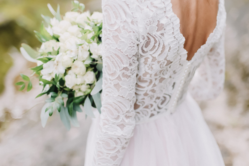
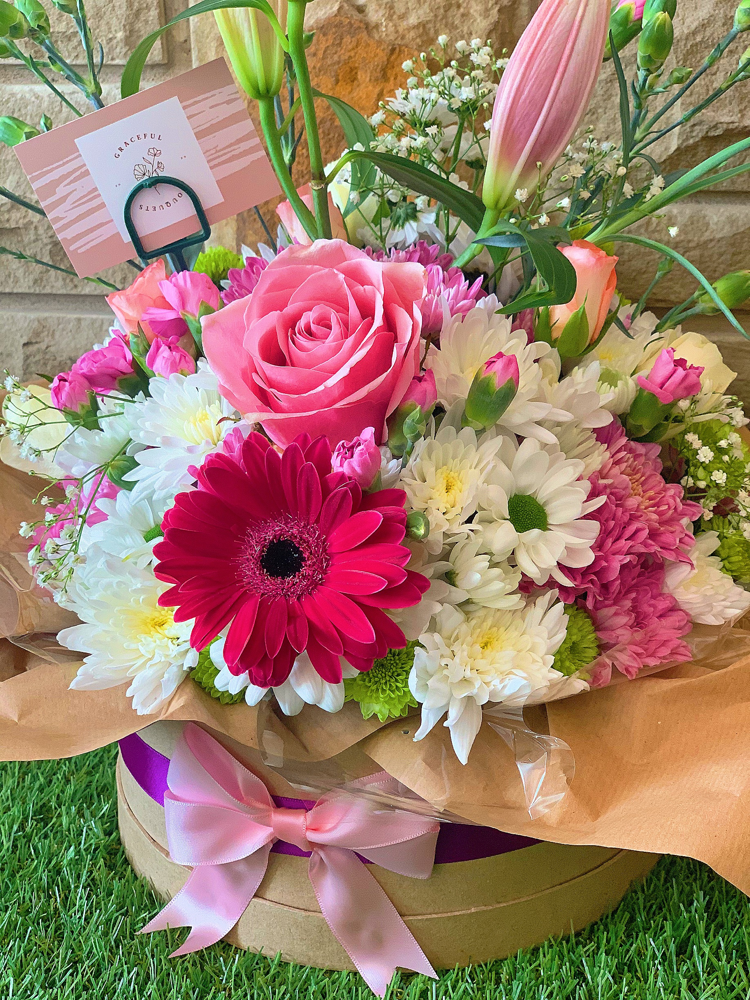

About us
Hey! Welcome to my little business, my name is Grace and my passion is flowers! I got my first florist job when i was just 15, since then my love for flowers has blossomed and i made Graceful Bouquets. My little business grows everyday and i am so excited that you managed to find my page! We make bouquets for anyone and any occasion, i have made bouquets for birthdays, weddings, prom or just random acts of kindness The best thing is we can personalize every bouquet and make them exactly how you want them! Check out our product page to see the style our customers love, DM/Message us for enquiries and remember, any occasion, any time, always graceful!
Ocassions 
Graceful Bouquets welcome all ocassions, we can facility weddings, anniversarys and holidays such as valentines, easter and halloween, no job is too big!
Our policys 
What makes us different is that we personalize every bouqeut especially for the customer, me turn a bouquet into the perfect, sentimental personal garden! No request is ever too much for me! All occasion Always graceful
Our bouquets 
Flowers are my passion and our bouquets are always made me love and imagination, the flowers we use are fresh picked individually for the customer and the materials we use are all echo friendly! We love making new and exciting mixtures of bouquets so if theres any specific flowers you would like please let us know!